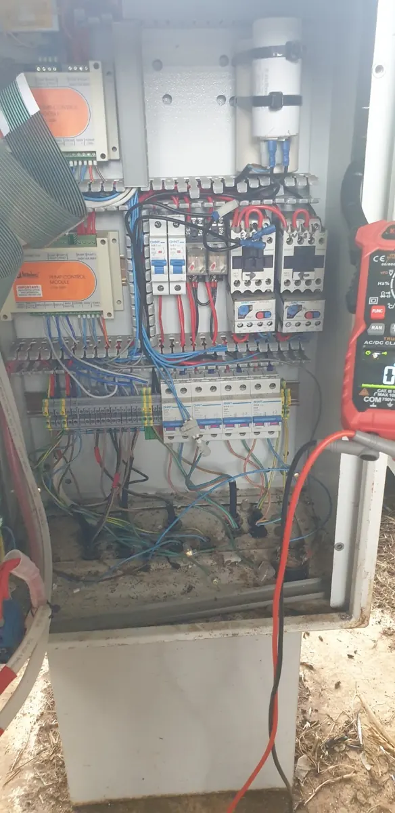
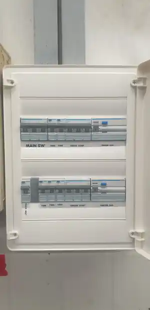
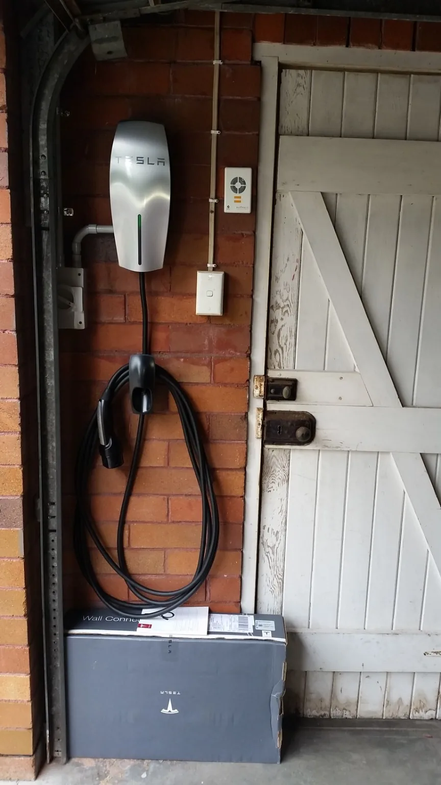

Electrical services for business, industry and homes.
From plant equipment and business maintenance to fault finding, switchboard upgrades and residential work, choose the pathway that fits the job. Based in Byron Bay, servicing the nearby Northern Rivers.
24/7 emergency electrical call-outs available. Actual attendance depends on workload, location and fault type.
Not every electrical enquiry is the same.
Use the quickest route for the kind of problem you have. Unknown faults are investigated before repairs are scoped; planned work can often start with photos and a description.
Something isn't safe.
Serious power problems, burning smells, sparking or dangerous electrical damage. Call directly for urgent assessment. If there's fire or immediate danger, call 000.
Call now · 0424 157 002Something has stopped working.
Tripping safety switches, lost power in one area or an intermittent fault. Book a diagnostic conversation instead of guessing which part to replace.
Explore fault findingYou know what needs doing.
Send the scope, suburb and safe photos for a switchboard, lighting, power, EV charger or renovation enquiry.
Send job detailsChoose the right electrical service.
Each specialist page explains the work, how we approach it and what information helps before attendance. Urgent call-outs remain phone-first.
Emergency electrical call-outs
Urgent electrical faults, serious power loss, sparking or dangerous damage. We prioritise safe assessment without promising unrealistic arrival times.
Call for urgent help → 01Fault Finding & Electrical Repairs
Diagnosis-first help for tripping circuits, failed equipment, dead powerpoints and intermittent electrical problems.
Explore diagnosis and repairs → 02Switchboard Upgrades
Assessment of older boards, modern circuit protection, ceramic fuses, capacity for new loads and safe upgrade planning.
View switchboard upgrades → 03Residential Electrical
Practical installations, repairs, extra circuits, home improvements and upgrades for existing properties.
Residential services → 04Commercial Electrical
Fault investigation, maintenance, lighting and planned electrical changes for local businesses and workspaces.
Commercial services → 05Industrial Electrical
Industrial fault finding, motors and drives, pump controls, electrical distribution and maintenance for operational sites.
Industrial electrical services → 06Power, Lighting & Fans
Powerpoints, LED lighting, ceiling fans, outdoor lights, switching and useful everyday upgrades.
Power and lighting → 07EV Charger Installation
Charger installation planning for supply capacity, cable routes, circuit protection and parking position.
EV charger services → 08Renovations & Electrical Upgrades
Electrical planning and fitting for kitchens, bathrooms, alterations and evolving power requirements.
Renovation electrical work →See what our electrical work looks like.
These images come from the Berryman Electrical archive. We do not assign unverified suburbs, outcomes or diagnoses to work photographs.



Clear scope, sensible next steps.
The first step depends on whether the electrical problem is urgent, unexplained or a defined installation.
Unknown faults
Diagnostic attendance identifies the likely cause and what a repair involves. Extra work or parts are discussed once the fault is better understood.
Planned work
Describe the work and send safe photos. We can discuss scope and whether an on-site assessment is needed before giving a reliable quote.
Tell us what matters.
Start with your suburb, the symptoms or proposed work, any relevant timing and safe-to-take photos. There is no need to guess the underlying fault.
Electrical services across Byron Bay and nearby Northern Rivers.
From Byron Bay to Mullumbimby, Brunswick Heads and nearby towns, service depends on the type of job and current availability.
We'll point you to the right service.
Call 0424 157 002 or describe the job. Electrical diagnosis, planned quotes and urgent call-outs have different first steps.